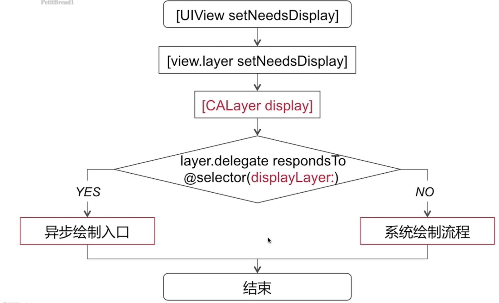
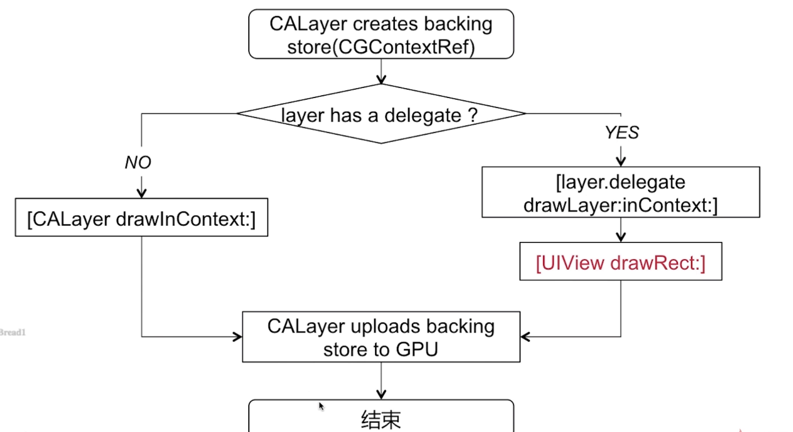
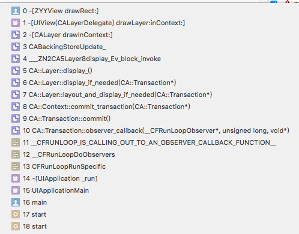
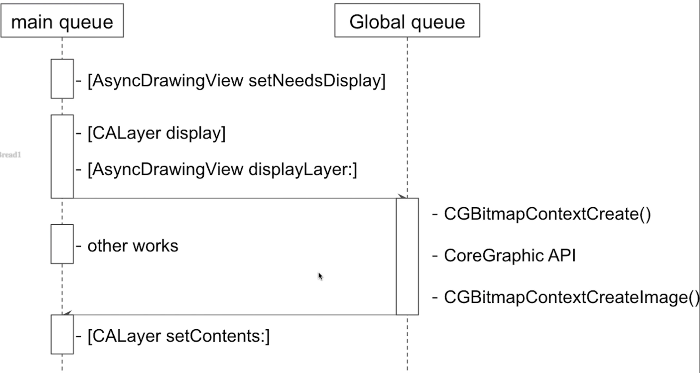

1.6异步绘制原理
绘制原理
UIView的视图绘制原理  在调用UIView setNeesDisplay 并不会立刻发生对应视图的对应工作，实际上是到当前 Runloop 快要结束的时候([CALayer display])才会开始介入到UI视图的绘制当中, 如果不响应 displayLayer 代理方法的时候就会走系统绘制流程，如果响应这个方法，就会走异步绘制的入口,这样就给我们异步绘制留有了一个余地.
系统绘制的流程图 
在 drawRect之前会调用 drawLayer, 举个例子，可以更方便看到系统的调用过程
- (void)drawRect:(CGRect)rect {
CGContextRef con = UIGraphicsGetCurrentContext();
CGContextAddEllipseInRect(con, CGRectMake(0,0,100,200));
CGContextSetRGBFillColor(con, 0, 0, 1, 1);
CGContextFillPath(con);
}
此时的堆栈 
怎么进行异步绘制呢,其实就是基于系统给我们开的口子layer.delegate,如果遵从或者实现了displayLayer方法,我们就可以进入到异步绘制流程当中,在异步绘制的过程当中
就由delegete去负责生成bitmap位图
设置改bitmap作为layer.content属性的值
通过一副时序图来了解异步绘制的机制和流程 